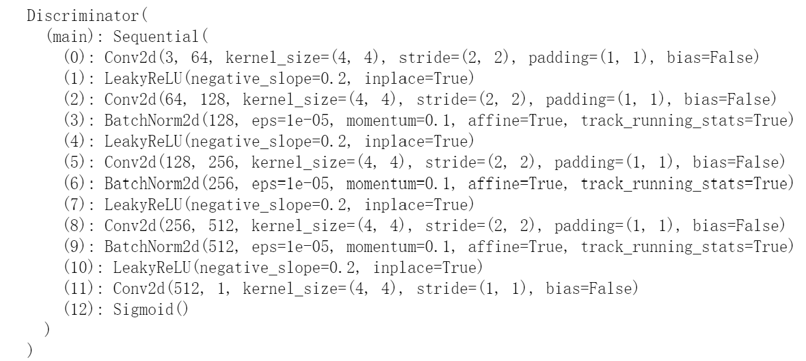
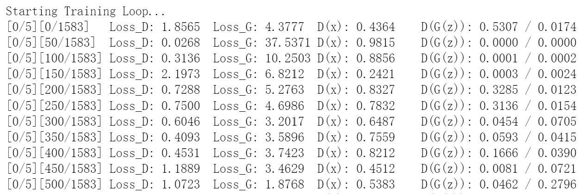
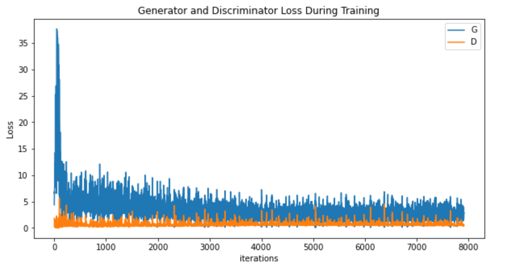

from __future__ import print_function #%matplotlib inline import argparse import os import random import torch import torch.nn as nn import torch.nn.parallel import torch.backends.cudnn as cudnn import torch.optim as optim import torch.utils.data import torchvision.datasets as dset import torchvision.transforms as transforms import torchvision.utils as vutils import numpy as np import matplotlib.pyplot as plt import matplotlib.animation as animation from IPython.display import HTML
# We can use an image folder dataset the way we have it setup. # 创建数据集 dataset = dset.ImageFolder(root=dataroot, transform=transforms.Compose([ transforms.Resize(image_size), transforms.CenterCrop(image_size), transforms.ToTensor(), transforms.Normalize((0.5, 0.5, 0.5), (0.5, 0.5, 0.5)), ])) # Create the dataloader dataloader = torch.utils.data.DataLoader(dataset, batch_size=batch_size, shuffle=True, num_workers=workers)
画出第一个batch的前64张图片看一下
1 2 3 4 5 6
# Plot some training images real_batch = next(iter(dataloader)) plt.figure(figsize=(8,8)) plt.axis("off") plt.title("Training Images") plt.imshow(np.transpose(vutils.make_grid(real_batch[0].to(device)[:64], padding=2, normalize=True).cpu(),(1,2,0)))
#判别器 classDiscriminator(nn.Module): def__init__(self, ngpu): super(Discriminator, self).__init__() self.ngpu = ngpu self.main = nn.Sequential( # input is (nc) x 64 x 64 nn.Conv2d(nc, ndf, 4, 2, 1, bias=False), nn.LeakyReLU(0.2, inplace=True), # state size. (ndf) x 32 x 32 nn.Conv2d(ndf, ndf * 2, 4, 2, 1, bias=False), nn.BatchNorm2d(ndf * 2), nn.LeakyReLU(0.2, inplace=True), # state size. (ndf*2) x 16 x 16 nn.Conv2d(ndf * 2, ndf * 4, 4, 2, 1, bias=False), nn.BatchNorm2d(ndf * 4), nn.LeakyReLU(0.2, inplace=True), # state size. (ndf*4) x 8 x 8 nn.Conv2d(ndf * 4, ndf * 8, 4, 2, 1, bias=False), nn.BatchNorm2d(ndf * 8), nn.LeakyReLU(0.2, inplace=True), # state size. (ndf*8) x 4 x 4 nn.Conv2d(ndf * 8, 1, 4, 1, 0, bias=False), nn.Sigmoid() )
defforward(self, input): return self.main(input)
# Create the Discriminator netD = Discriminator(ngpu).to(device)
# Handle multi-gpu if desired if (device.type == 'cuda') and (ngpu > 1): netD = nn.DataParallel(netD, list(range(ngpu))) # Apply the weights_init function to randomly initialize all weights # to mean=0, stdev=0.2. netD.apply(weights_init)
# Print the model print(netD)

优化器，损失函数…
1 2 3 4 5 6 7 8 9 10 11 12 13 14 15
# 交叉熵损失函数 criterion = nn.BCELoss()
# Create batch of latent vectors that we will use to visualize # the progression of the generator # 从正态分布中采样64个nz长度的随机噪声序列 fixed_noise = torch.randn(64, nz, 1, 1, device=device)
# Establish convention for real and fake labels during training real_label = 1. fake_label = 0.
# Lists to keep track of progress img_list = [] G_losses = [] D_losses = [] iters = 0
print("Starting Training Loop...") # For each epoch for epoch inrange(num_epochs): # For each batch in the dataloader for i, data inenumerate(dataloader, 0): ############################ # (1) Update D network: maximize log(D(x)) + log(1 - D(G(z))) ########################### ## Train with all-real batch netD.zero_grad() # Format batch real_cpu = data[0].to(device) b_size = real_cpu.size(0) label = torch.full((b_size,), real_label, dtype=torch.float, device=device) # Forward pass real batch through D output = netD(real_cpu).view(-1) # Calculate loss on all-real batch errD_real = criterion(output, label) # Calculate gradients for D in backward pass errD_real.backward() D_x = output.mean().item()
## Train with all-fake batch # Generate batch of latent vectors noise = torch.randn(b_size, nz, 1, 1, device=device) # Generate fake image batch with G fake = netG(noise) label.fill_(fake_label) # Classify all fake batch with D output = netD(fake.detach()).view(-1) # Calculate D's loss on the all-fake batch errD_fake = criterion(output, label) # Calculate the gradients for this batch errD_fake.backward() D_G_z1 = output.mean().item() # Add the gradients from the all-real and all-fake batches errD = errD_real + errD_fake # Update D optimizerD.step()
############################ # (2) Update G network: maximize log(D(G(z))) ########################### netG.zero_grad() label.fill_(real_label) # fake labels are real for generator cost # Since we just updated D, perform another forward pass of all-fake batch through D output = netD(fake).view(-1) # Calculate G's loss based on this output errG = criterion(output, label) # Calculate gradients for G errG.backward() D_G_z2 = output.mean().item() # Update G optimizerG.step() # Output training stats if i % 50 == 0: print('[%d/%d][%d/%d]\tLoss_D: %.4f\tLoss_G: %.4f\tD(x): %.4f\tD(G(z)): %.4f / %.4f' % (epoch, num_epochs, i, len(dataloader), errD.item(), errG.item(), D_x, D_G_z1, D_G_z2)) # Save Losses for plotting later G_losses.append(errG.item()) D_losses.append(errD.item()) # Check how the generator is doing by saving G's output on fixed_noise if (iters % 500 == 0) or ((epoch == num_epochs-1) and (i == len(dataloader)-1)): with torch.no_grad(): fake = netG(fixed_noise).detach().cpu() img_list.append(vutils.make_grid(fake, padding=2, normalize=True)) iters += 1

漫长的等待过后，终于训练好了。
loss可视化
1 2 3 4 5 6 7 8
plt.figure(figsize=(10,5)) plt.title("Generator and Discriminator Loss During Training") plt.plot(G_losses,label="G") plt.plot(D_losses,label="D") plt.xlabel("iterations") plt.ylabel("Loss") plt.legend() plt.show()

生成图像的质量演变过程可视化
1 2 3 4 5 6 7
#%%capture fig = plt.figure(figsize=(8,8)) plt.axis("off") ims = [[plt.imshow(np.transpose(i,(1,2,0)), animated=True)] for i in img_list] ani = animation.ArtistAnimation(fig, ims, interval=100, repeat_delay=1000, blit=True) ani.save("pendulum.gif", writer='pillow') #HTML(ani.to_jshtml())